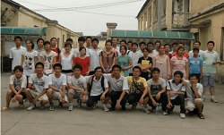
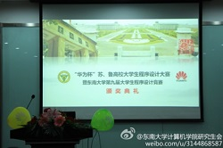

Campus Work
- 2009.9-2012: League branch secretary
- 2012.9 - 2013.1: course TA, C++,A programming language, College of Software Engineering, SEU.
- 2012.9 - present: the monitor of the class
- 2012.9 - present: member of branch committee of graduate student party branch
- 2012.9 - present: minister of network & technology of Graduate Union in CSE
Activity Overview
-  社会实践：走近城市中的农民工
2010年暑假，参加计算机学院暑期社会实践活动，走近城市中的农民工，以及他们的子女
- 东大招生宣传
2012年暑假，参加东南大学高考招生宣传活动
-  “华为杯”苏鲁高校大学生程序设计竞赛
2013年，主办“华为杯”苏鲁高校大学生程序设计大赛，比赛吸引了来自东南大学，南京大学，中国矿业大学，山东大学，中国海洋大学等16所高校近1000名选手参加。